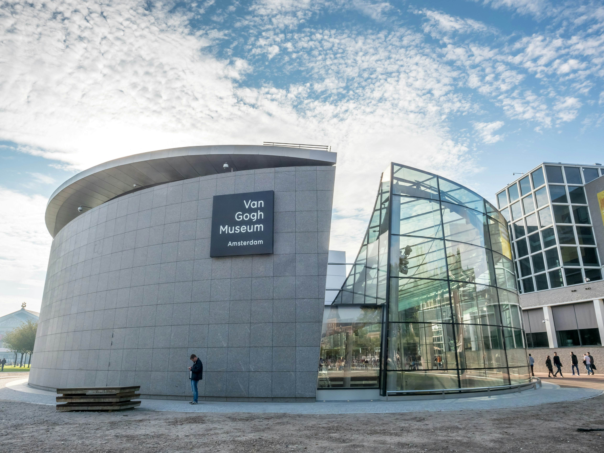
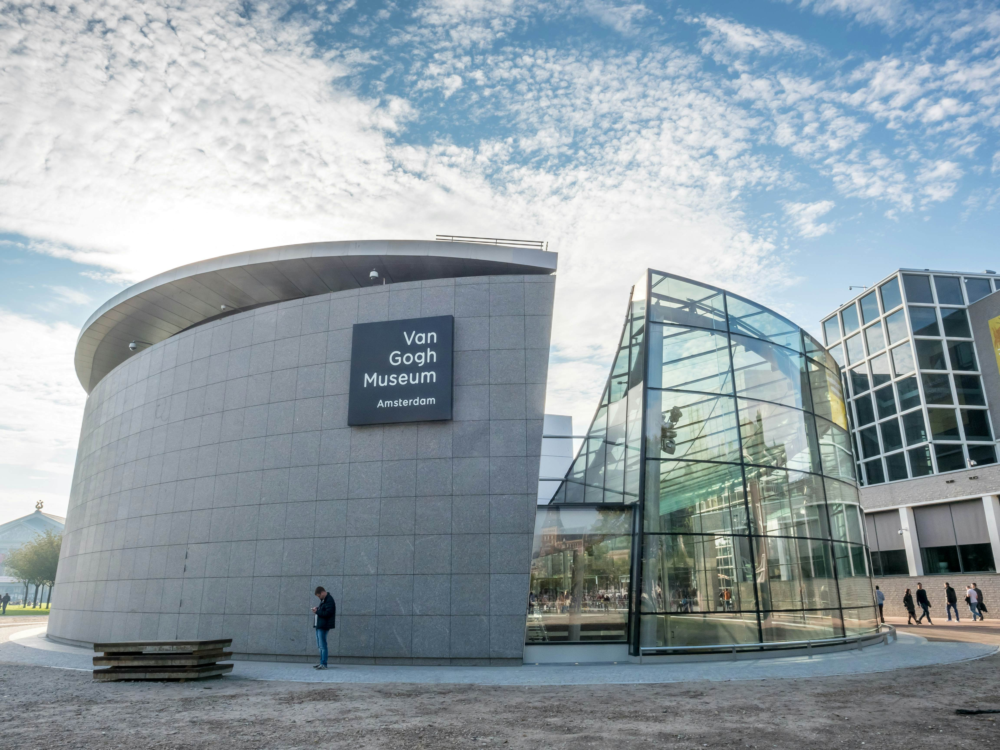
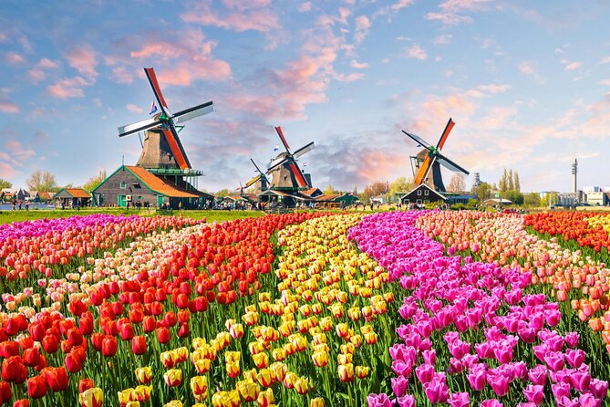
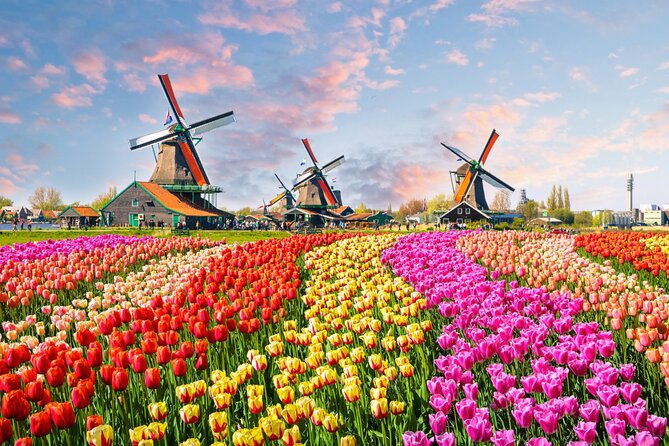
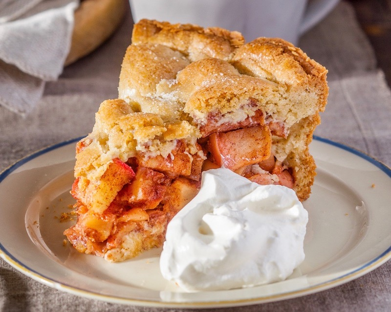
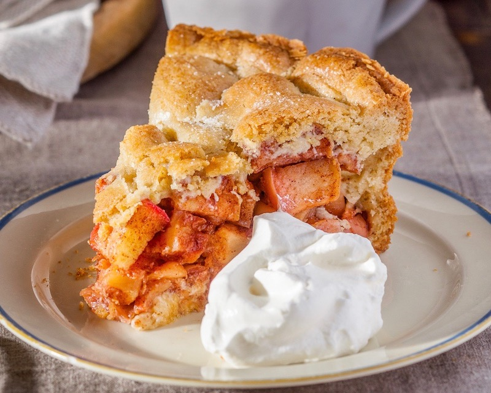

Monuments
The Netherlands is a land of vibrant culture, historic landmarks, and picturesque landscapes. From the iconic canals of Amsterdam to
the colorful tulip fields of Keukenhof and the charming windmills of Kinderdijk, each site tells a story of the nation’s rich heritage.
Discover the colors, traditions, and iconic sights that make the Netherlands an unforgettable destination.
SHOW MORE
SHOW MORE
 

 

 
